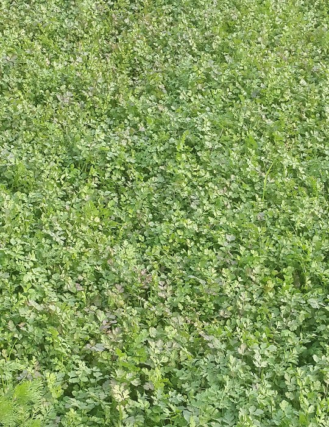

How We Got Started
This initiative
was first proposed by CEO and Founder of Farm Fresh 24 Mrs.Shahnaz Ali.
As she travels
frequently between Urban to Rural Areas. She is very much aware about the
quality of vegetables. As she belongs to farmer’s family but residing in
Gurgaon. After several visits to her farms she realised that the quality of
vegetables available in Gurgaon is very low and prices are very high as compared
to the farms where the quality is very high and the prices are very low. Since
that time she stopped purchasing vegetables from the local vendors, instead every
week she start bringing vegetables from her farms. As she believes that “In Gurgaon we are paying for diseases by purchasing
chemically grown and cold storage stored vegetables”. As a mother she
thought about all those mothers who are worried about their children health.
And she also realised that the farmers are not getting what they deserve as she
is also from a farmer’s family and very much aware about the conditions of the
farmers. Farmers never get what they deserve and all the profit is made by the mediators.
After few weeks of deep thinking she finally start working for this project.
She went to the different-different vegetable markets, Mandi’s and ordered
vegetables from nearly all online E-Grocery stores. She wasn’t satisfied at all
with the products from the quality as well as price point of view. One night she finally put her idea in front of
her family members after a long discussion she finally decided that she is
ready to do anything for the betterment of this society as a human being, it’s
her moral duty to share what she has not for the money but for the sake of
health of other families as only a mother can understand other mother’s feeling
when someone from their falls ill, indeed for the wealth of the farmers too.
She decided to start a nearly non-profitable online Vegetable store providing “Farm at your Doorstep”. She believes
that the society will surly cooperate and will definitely take a step forward
for a Healthy Society and Wealthy
Farmers.
